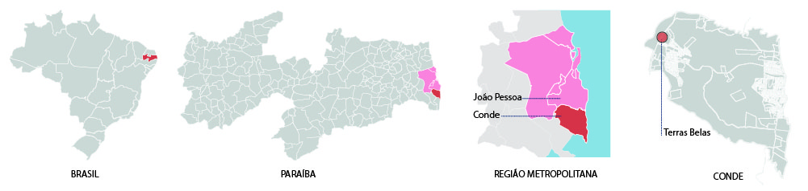
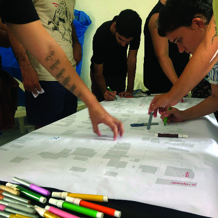
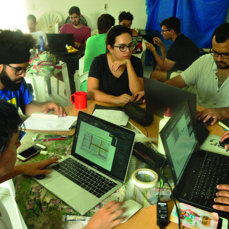

©2017 LabRua
Template: Bootstrapious
+ Kishan B

Co-criar o urbano: Repensar a rua em Terras Belas
2020-08-04; athis, oficina, conde
O LabRua realizou nos dias 14 e 15 de março de 2020, com a colaboração da Prefeitura Municipal de Conde a partir da Secretaria de Planejamento (SEPLAN) e participação da Universidade Federal da Paraíba (UFPB), a oficina “Co-criar o urbano: Repensar a Rua em Terras Belas”, com o intuito de repensar os espaços públicos do bairro. Participaram XX pessoas da oficina e ao final foi elaborada uma cartilha com os principais resultados.
Nos dias 13, 14 e 15 de março de 2020, aconteceu no município de Conde o Seminário de Capacitação em Assistência Técnica: A Experiência do Município de Conde-PB. A realização desse evento se deu com base nas experiências com a Assistência Técnica em Habitação de Interesse Social (ATHIS) no bairro Terras Belas naquele município. O bairro está localizado às margens da BR-101, um local relativamente distante do centro do município com carência de infraestrutura básica, como distribuição de água e coleta de lixo deficitárias, falta de saneamento básico e pavimentação, entre outros aspectos

O bairro Terras Belas foi escolhido por já ter sido objeto de aplicação da primeira experiência com ATHIS do EPA, o Escritório Público de Assistência Técnica do município de Conde, que facilitou a realização de projetos de adequação para 60 residências, elaborados por quatro empresas diferentes (o LabRua foi uma das empresas responsáveis pelo projeto de dezesseis casas). Ao longo do ano de 2019, esses projetos foram elaborados e a realização do Seminário permitiu a execução de quatro desses projetos, sendo um de cada empresa contratada.
Durante o Seminário de Capacitação em Assistência Técnica, foram realizadas palestras, debates e oficinas. As primeiras ocorreram na sede do IAB.pb e as oficinas em Terras Belas. Participaram da oficina XXX pessoas, entre estudantes e profissionais, a maioria delas da área da arquitetura e urbanismo, contando também com antropólogos, designers, sociólogos e alguns moradores do bairro, os quais foram fundamentais durante todo o processo.

- Os participantes foram divididos em grupos, onde cada grupo ficou com uma área do bairro para fazer uma leitura do lugar, observando características presentes no espaço, como a relação das pessoas com a rua, aspectos ambientais, relações entre moradores da área, entre outros;
- Cada grupo fez uma visita à área, percebendo como os habitantes usam os espaços públicos do bairro e buscando conversar com os moradores sobre os principais problemas assim como o que eles mais gostam do bairro;

- Grupo reunido, usando como base um mapa do bairro impresso, é o momento de compartilhar as informações coletadas, elaborando de forma coletiva um mapa mental, elencando as opiniões dos moradores sobre o bairro. Destaca-se a participação da moradora Rafaela que contribuiu com o grupo durante toda a atividade.

- Toró de ideias, com base na leitura coletiva da área, foram feitas rodadas de sugestão de diretrizes a serem tomadas para o bairro como um todo;

- Com base nos resultados das sugestões, os participantes foram divididos em quatro grupos de trabalho para desenvolver melhor as propostas. Os temas dos grupos foram: propostas a curto prazo, propostas a longo prazo, propostas para as vias do bairro e propostas de gestão pública;

- Ao longo da tarde do sábado e início da manhã do domingo, foram desenvolvidas propostas para o lugar com algumas pausas para apresentação do processo de trabalho dos grupos.

Resumo das propostas
Propostas de gestão
Para além das propostas de intervenção física do espaço, foram pensadas em ações de gestão que colaborassem com a melhoria da qualidade de vida das pessoas da comunidade. As ações são colocadas de tal forma a gerar um maior engajamento da população em questões de interesse coletivo, como cursos de capacitação, presença mais efetiva do poder público na organização do lugar, como por exemplo, o desenvolvimento de uma agenda cultural junto a Secretaria de Cultura do município de Conde.
Propostas de curto prazo:
Foram pensadas em ações para o bairro que pudessem ser executadas a curto prazo, a partir do Mutirão da Vizinhança, programa que faz parte da atual agenda urbana da Secretaria de planejamento de Conde. Junto a alguns moradores do bairro, elencou-se áreas com potencial urbano a se tornarem espaços de convivência, as quais seriam palco destas ações. As diretrizes propõem a construção de bancos, parquinhos, hortas comunitárias e paradas de ônibus que possam ser executados rapidamente e de forma colaborativa entre a comunidade e a equipe técnica da Seplan/Conde.
Propostas de longo prazo:
Entendendo que a implantação de determinados equipamentos públicos na área não é uma solução simples, e de forma a melhorar o bem estar da população, foram propostas ações pensando em três principais estratégias de longo prazo para o bairro:
- Melhorar o deslocamento da população;
- Implantar equipamentos de lazer, esporte e contemplação no bairro; e,
- Melhorar a qualidade ambiental da área.

A oficina foi finalizada no domingo com um debate sobre os pontos fortes e fracos. Apesar das ideias terem sido todas definidas e começadas a serem trabalhadas nos dois dias de oficina, o tempo não foi suficiente para finalização da cartilha. A equipe do LabRua finalizou a cartilha posteriormente, incluindo o processo e as propostas construídas com a população e os oficinantes.
Cartilha Co-criar o urbano: Repensar a rua em Terras Belas.
.